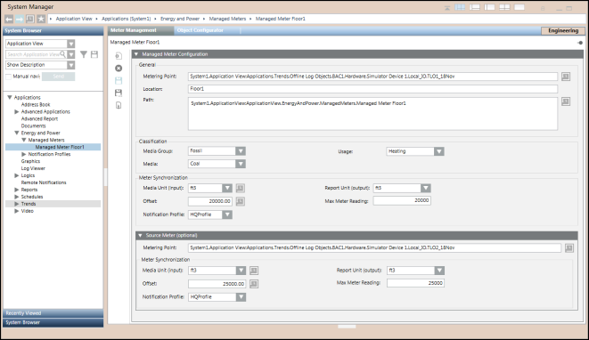

Managed Meters Workspace
The Meter Management configuration workspace facilitates creation and configuration of managed meters. You can access this screen by selecting Applications > Energy and Power > Managed Meters. The Meter Management tab is accessible only if you select the Managed Meter application directly from the Security application.

You can configure managed meters from the following options: